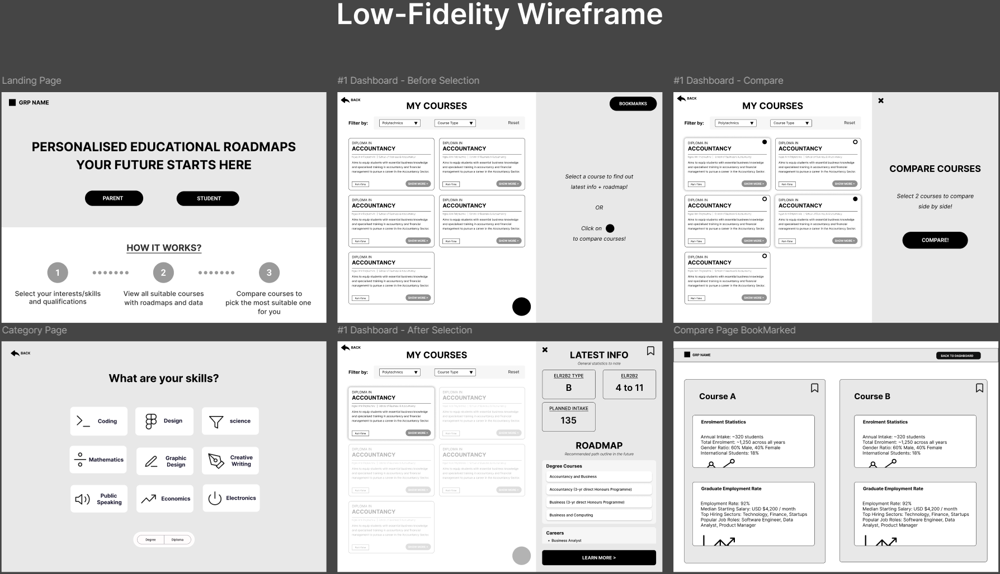
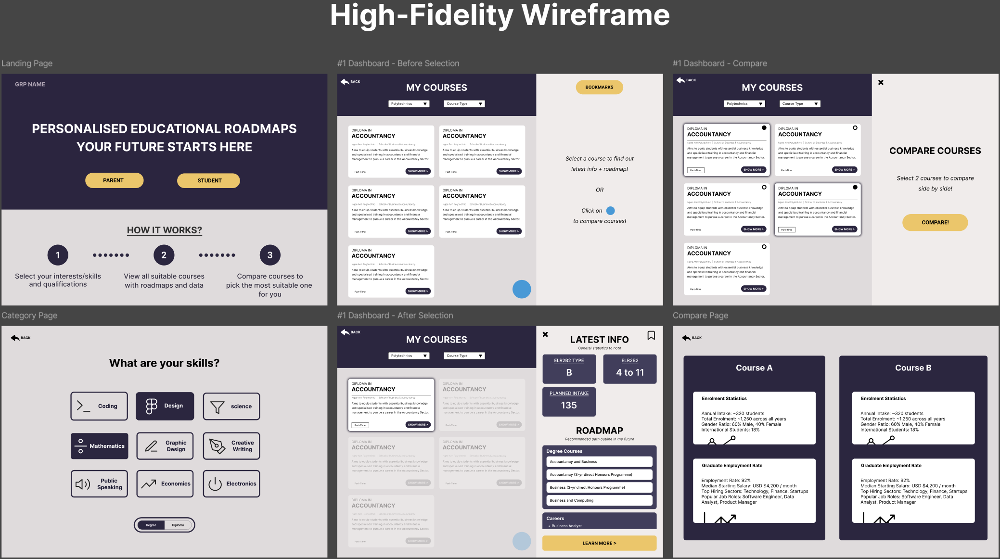
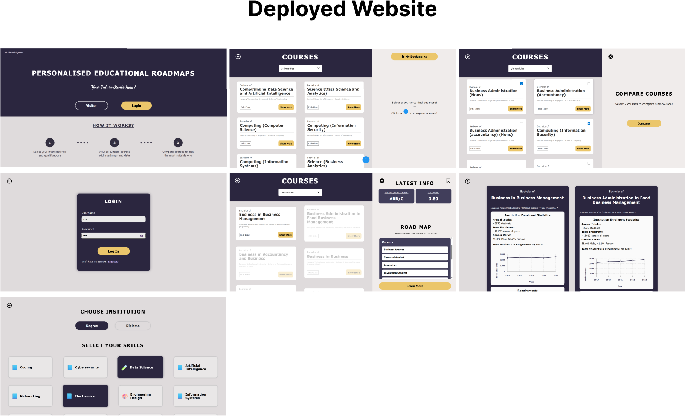
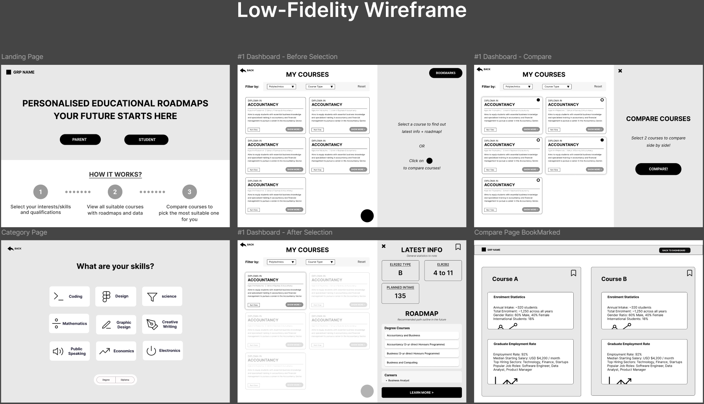
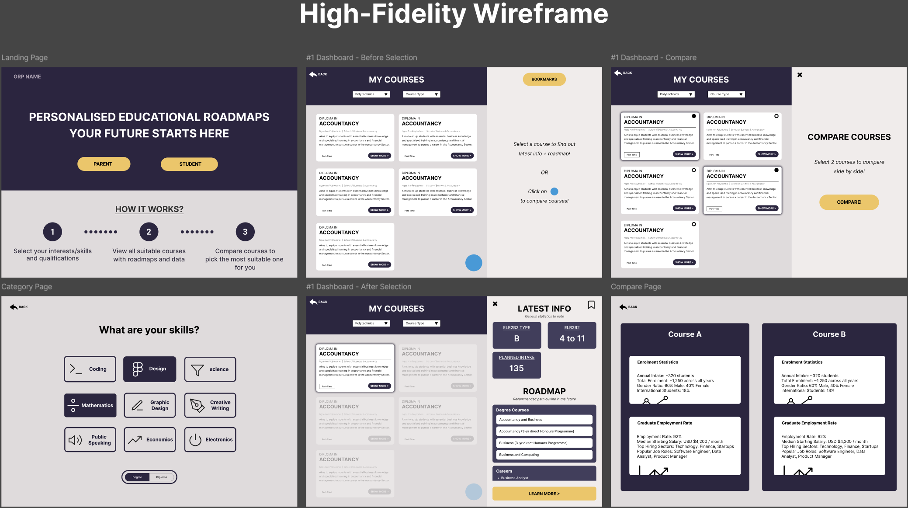
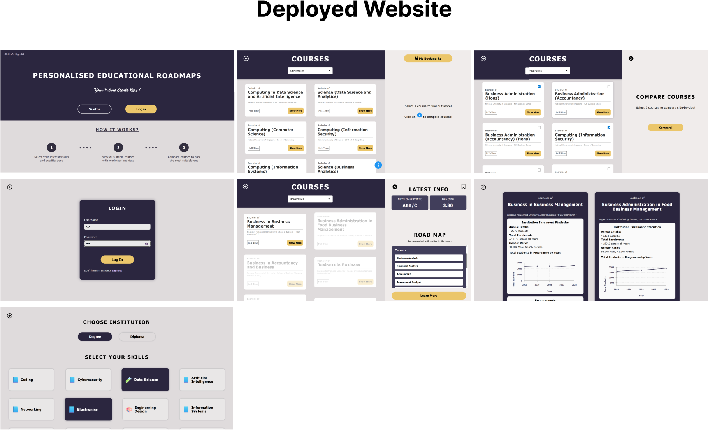

MY RESPONSIBILITIES
- Led the UI/UX design by creating the website layout, wireframes, and user flows in Figma.



- Implemented the entire dashboard within a single React file that handles multiple internal sections to centralize logic and layout, while using reusable components for scalability and maintainabilty.
- Collaborated closely with the backend developer for data retrieval and logic code.
- Managed frontend integration and GitHub workflows, merging contributions from all members, resolving conflicts, and maintaining a stable main branch.
- Designed and integrated the visual style of the website by defining the color scheme and UI assets across all pages and components.
★ Final Result!! Below displays screenshots of the actual website implemented! 


- Implemented the entire dashboard within a single React file that handles multiple internal sections to centralize logic and layout, while using reusable components for scalability and maintainabilty.
- Collaborated closely with the backend developer for data retrieval and logic code.
- Managed frontend integration and GitHub workflows, merging contributions from all members, resolving conflicts, and maintaining a stable main branch.
- Designed and integrated the visual style of the website by defining the color scheme and UI assets across all pages and components.
★ Final Result!! Below displays screenshots of the actual website implemented! 